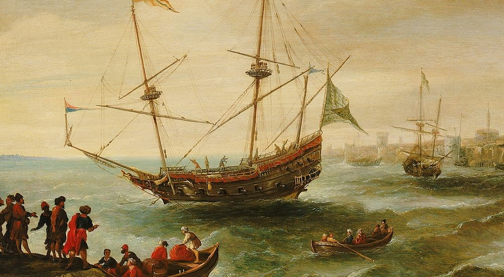

The Phenomenon of ‘Turning Turk’ in the Mediterranean
Robert Daborne’s play, A Christian Turn’d Turk (1612), portrayed John Ward’s conversion to Islam as a renunciation of Christianity, with economic gain and infatuation with a Turkish woman as the primary motivating factors behind his conversion. The play depicted Christo-European prejudice, the lingering bitterness of the Crusades, and English anxieties towards the political might of the Ottoman and Islamic world. But contrary to this, there has been a lot of evidence to suggest that Islam and the Mediterranean offered spaces of emancipation and liberty for European outcasts, slaves, captives, and pirates that could not be found in Christendom. This will be demonstrated by firstly detaching the Eurocentric narrative, secondly, delineating the experiences of captives, thirdly, elaborating on Peter Lamborn Wilson’s argument, and finally ending with the examination of several case studies and biographical descriptions of “pirates” that turned Turk.
Western teleology constructs the idea that Western Empires – beginning with the Roman and Greek maritime powers and passing onto the British and Dutch – were the protectors of free trade and justice at sea, and those that fell outside of this category were regarded as ‘enemies’ or ‘pirates’, beginning with Carthage and passing onto the Ottomans and Barbary corsairs. The combination of eurocentrism, Crusader propaganda, and anxieties over Ottoman naval supremacy in the Mediterranean led many Christo-European writers to establish a demarcation through polemical works. “Turk” referred to all Muslims, whether it be Berbers, Arabs, or Moors, with connotations of barbarity, immorality, and lust as writers accused them of idolatry, sodomy and other vices that opposed Christian norms. Those that converted were titled “renegadoes”, turncoats, and heretics.
From the 15-17th century, the Mediterranean was viewed as a menacing hotbed of slavery and torture, where women became concubines in Ottoman harems, all of which posed a direct threat to the developing Christian and English national identity. In reality, the Mediterranean had thriving cosmopolitan city centres and deep levels of interaction between ethnically diverse communities, with Berbers intermingling with Arabs, Moors, Greeks, and Turks over many centuries, as well as the settlement of persecuted minorities from Europe, such as Huguenots and Protestants from France and Sephardic Jews from Iberia. Even Barbary corsair crews were motley collections of Muslims, Christian’s turned-Turk, Jews, Berbers, Arabs, Greeks, and those who were banished following the Spanish Reconquista.
After detaching the Eurocentric narrative, the idea of captivity must be interrogated. Linda Colley highlights that there were 20,000 or more British captives in North Africa and 800 British ships were seized by the Barbary pirates, but for every statistic of European captives, they are matched by Muslim captives. Nabil Matar points out that accounts of Muslims were so vast that a corpus captivitis emerged, but were restrained to the subtexts of larger polemics. In the 16th and 17th century, Portuguese and Spanish ships attacked North African ports and established several military bastions, and Christo-European armies captured thousands of Muslim, men, women and children, and kept them either as captives in presidios or transported to the slave markets in Europe or the trans-Atlantic slave trade. Ahmad Sharab documented that from 1521-22, nearly 60,000 Moroccans were seized and deported to Europe and in 1611, and there were 5,500 Muslim captives in Malta alone. Yajjabsh al-Tazi in his poem described one of these attacks in 1514, noting “children were separated from their mothers and husbands from their wives” and “hijabs were torn away from”.
Therefore, instead of a statistical standoff as to who captured more slaves, it is more effective to discuss the conditions of slavery. Capturing slaves as the “spoils of war” was common practice both in Europe and the Mediterranean, but there was a strong contrast in their experiences. Upon arrival to the Mediterranean, captives were separated into two groups: those for ransom and those for work. The category they fell into depended on the individual themselves, and those that had connections and wealth for ransom making it clear to prospective buyers. For those that became workers, the spectrum of servitude was varied; many ended up with relatively menial posts in household services such as lackeys and servants, but if they had the required skillset they could become blacksmiths, carpenters, or businessmen. The better skilled, the higher quality of life one could expect – quintessentially the same mode of life in the class-based Europe at the time, of which most were working-class or peasants, but the Mediterranean excluded the social constraints of class discrimination and the Protestant and Catholic prejudices of Europe. For those awaiting ransom, the time it took allowed some captives to become “nascent archaeologists and antiquarians” as they explored the local environment. Thomas d’Arcos was enslaved in 1625 but remained in Tunis, as he journeyed the local area and acquired artefacts, maps and drawings and sent them back to France, before converting to Islam seven years later.
In contrast, the Atlantic slave trade, plantations, and indentured servitude of the Caribbean, America, and Europe followed a distinct economic model – mainly commercial labour – that did not have the liberating potential of the Mediterranean nor moral and religious constraints on slavery that Islam held in place – evidenced by the rampant human trafficking. In Islam, slavery was neither advocated nor propagated but was seen as a fact of life entrenched in society, and there were religious duties placed upon those that owned slaves, such as feeding and clothing them. In any case, the freeing of a slave was viewed as an act of piety, seen by the hadith, “Any man who frees a slave, God will spare from Hell for every limb of the slave a limb [of the liberator]”. This would not only impact corsairs, but jurists’ legal judgements in freeing captives.
Additionally, Linda Colley’s Captives (2003) only recorded European captives enslaved by Barbary corsairs and noted that Muslim and North African captives did not leave behind narratives about their enslavement by Christians. This is because the Maghraibi corpus captivitis followed a different paradigm from its European counterparts, as Muslim writers did not document their personal experiences and humiliations as they felt it to be private between them and God or not important at all. For instance, Ahmad ibn Ghanim only briefly mentioned his torture as he did not want to burden the reader with his own suffering. This is unlike Christian captives, who wanted to emulate and publicise the theological image of Jesus Christ’s suffering.
There is the notion that there were a large portion that converted for economic or social gain, to either avoid the jizya poll tax or liberate themselves from captivity. Conversion to Islam did not mean they lost their title as slaves, but were spiritually equal, and although non-Muslims were prevented from owning land, they could still own ships and build whatever revenues of income they were capable of, and therefore did not prevent them from social ascendency. Although many women were made concubines and entertainers, a large portion of female slave representation in the Mediterranean are results of polemical literature that fantasised and exaggerated the ‘lustful Turk’ in the European imagination, and disregarded the category of women who were not simply passive victims of male violence, but gained their own agency through their occupation. In reality, most female slaves were either domestic servants, wet-nurses, or apprentices, thousands of whom converted or married Muslim men and bore their children.
Wilson’s explanation as to why one would ‘turn Turk’ focuses primarily on political reasoning, stating that anti-religious and anti-clerical sentiment led Europeans to form their views on Islam. Indeed the perception of many European Islamophiles of the time was rooted in resentment of the establishment, but beyond this was the likelihood that many European captives found a closer sense of morality and egalitarianism in the Mediterranean than they were exposed to in Europe. The severe class inequality and destitute conditions of European navies led many sailors to consider themselves the “most rejected figure of all European economy and government – powerless, underpaid… lost to scurvy and storms at sea.” In contrast, an English journalist writing about North African Muslims in 1637, “They are just in their words and promises…. For the breach of promise is held an unrecoverable disgrace amongst them.” Converts transition into Islamic societies was more fluid and less demanding, as James Clifford notes a significant portion of Briton’s became ‘hybrid natives’, integrating into the communal and political fabric in ways that were not possible for Christian converts in Europe, as social alienation and the ‘Purity of Blood’ theory prevented any converts to acquire respectability in either Britain, Spain or Holland. Conversion rewarded some European captives in Islamdom, but not captives in Christendom.
The category of “pirates” that turned Turk is also convoluted through Western polemical literature, as the Eurocentric retelling of history blurred the lines between pirates, privateers, and naval authority. The English outlawed piracy whilst licensing and legitimising Sir Francis Drake and Henry Morgan who carried out equally piratical acts. The Knights of Hospitaller harassed the trade of those ideologically opposed to them and did not coalesce around naval authority, unlike the Ottomans, but were not labelled pirates in western literature. Hızır Reis was demonised as a pirate and labelled “Barbarossa” across Europe but celebrated in Turkey as a formidable admiral. Thus, we can consider the label of ‘pirate’ as fluid and applicable by those in charge of the narrative, where both Christo-European and Muslim writers were susceptible to prejudice.
They may not have been “heretical traitors” or “angels of jihad”, but what is clear through biographical recounts is that there was no coercion, recantation, or superficiality in their conversions. John Ward was among the most prominent of those who turned Turk when Ottoman officer ‘Uthman Dey’ granted him protection in Tunis after James I outlawed piracy in 1608, to which he and his crew converted to Islam and Ward changed his name to Yusuf Reis. Edward Coxere wrote Ward “always had a Turkish habit on, he was to drink water and no wine, and wore little irons under his Turk shoes”. This was a sharp contrast to an earlier account of him by an English sailor prior to his conversion, describing him as “drunk from morn till’ night” in 1607. Instead, Ward’s life had completely changed in Tunis as Scottish traveller William Lithgow visited him in 1616 and his description of his crew was reflective of several aspects of their conversion. He describes them as “15 circumcised English renegades, whose lives and countenances were both alike.” Lithigow mentioning their lives being “alike” indicates they all prayed, fasted, and carried out religious duties together. Their similar countenances reflect they were all bearded men, and highlighting they were all circumcised underlines the extent of their religiosity, and that it was not simply superficial.
Jan Janszoon was another, changing his name to Murat Rais following his capture in Algiers in 1618. The typical narrative is that he was coerced into conversion, however Stephen Sandler points out that Jan was a zealous Muslim missionary who tried hard to convince fellow Christo-Europeans to convert to Islam, and worked alongside several other Dutchmen that converted to Islam, such as Sulayman Rais. He would later establish the Republic of Salé and was appointed President and Grand Admiral by Moulay Zidan, Sultan of Morocco, indicating he had the undoubtable support of his fellow corsairs, particularly the Sultan who allowed Murad to marry his daughter. His rise to fame is also facilitative proof of his choice to convert, as records highlighted the intelligence and bravery in his leadership, showing clear agency in his decision making.
In most cases, pirates were larger than life personalities that considered themselves “enemies of the world”, and through the recurrent themes among those that ‘turned Turk’, one could infer that the principles of jihad, the afterlife, and the spiritual and ritualistic operations of Islam controlled and directed these personalities towards a greater cause. Both Jan Janzsoon and John Ward would retire from seafaring in favour of a more sedentary lifestyle, unlike their European counterparts who would continue plundering until death or eventual capture. Particularly Ward, who ended his seafaring career in 1612 to teach younger corsairs gunning and navigation until 70. Considering Ward’s charisma and ostentatious persona, which was well documented in Europe, it would not be farfetched to suggest that such an anticlimactic ending was brought about by Islam.